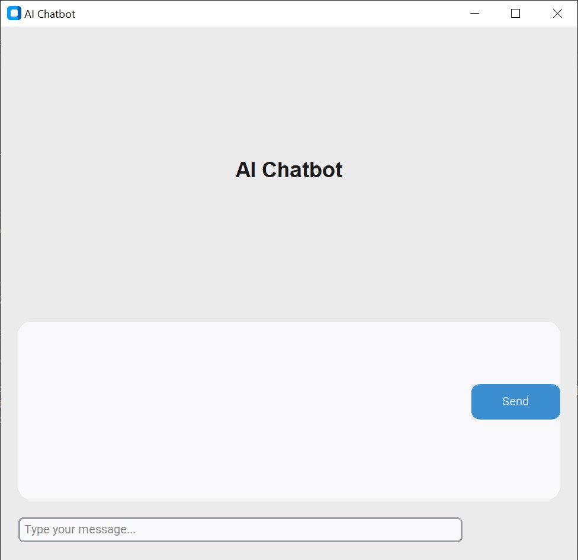

Local AI Assistant powered by Llama 3.2
A desktop AI chatbot built with Python and CustomTkinter, powered by Ollama and the Llama 3.2 model for local AI conversations.

About This Project
This project is a desktop AI chatbot that allows users to have conversations with a local AI model. It uses Python and CustomTkinter for the interface, while Ollama runs the Llama 3.2 model locally.
The application sends messages to the locally running Llama 3.2 model through Ollama, keeping conversations private on the user's computer without relying on cloud-based AI services.
Key Features
💬 Local AI Conversations
Chat with an AI assistant powered by the locally running Llama 3.2 model.
🖥️ Desktop Interface
Use a clean CustomTkinter interface to send messages and read responses.
🧠 Llama 3.2 Integration
Connects to Ollama to run the Llama 3.2 language model on your computer.
🔒 Private Processing
Keep conversations on your computer without sending messages to cloud services.